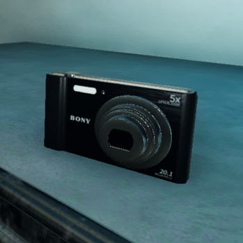

Призрак
При́зрак — в традиционных представлениях душа или дух умершего человека, или мифического существа, проявляющиеся в видимой или другой форме в реальной жизни (от невидимого и неосязаемого присутствия до практически реалистичных наблюдений). Преднамеренные попытки связаться с духом умершего называются спиритическим сеансом или, в более узком смысле, некромантией.
узнать больше

Связь с призраками
Есть три способа вступить в разговор с призраком.
Использовать Радиоприёмник для общения с духами (Spirit Box). Она лежит в грузовике.
Найти доску для спиритических сеансов (Ouija board) и с ее помощью связаться с призраками. Она появляется на уровнях в случайных местах.
Говорить напрямую через микрофон. Призраки всегда слушают вас и реагируют на ваши действия.
узнать больше

Предметы и устройства
Снаряжение в Phasmophobia позволяет определить тип призрака или достигнуть необязательных целей. Игроки могут приобретать снаряжение на деньги, которые они получают за успешные расследования, однако взять с собой можно только ограниченное количество предметов.
узнать больше